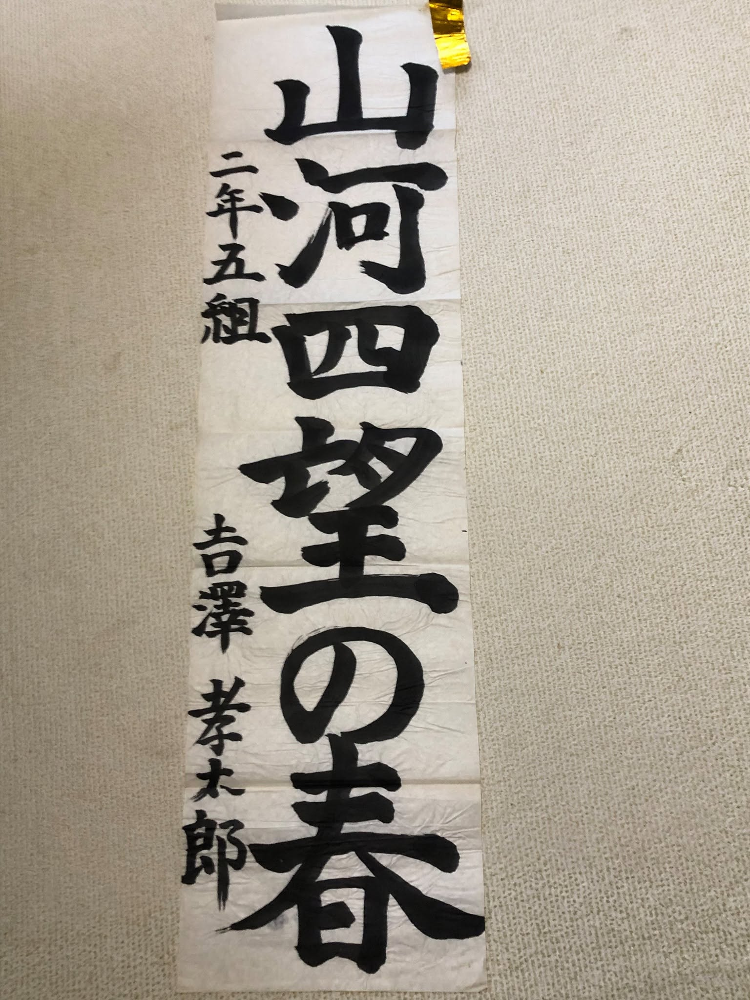
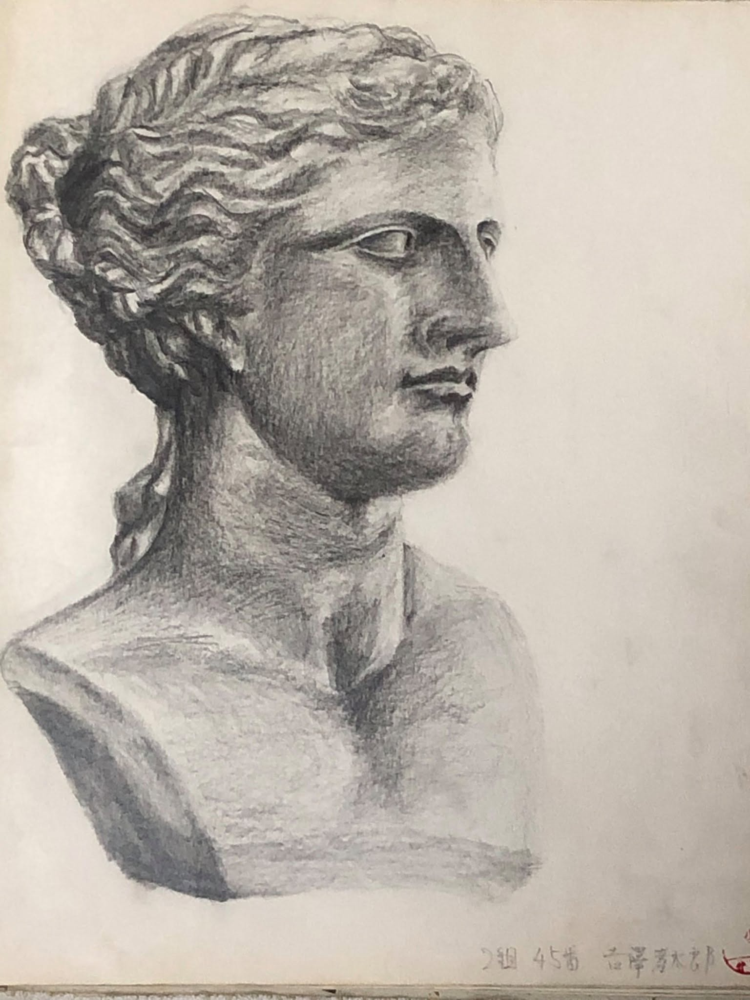
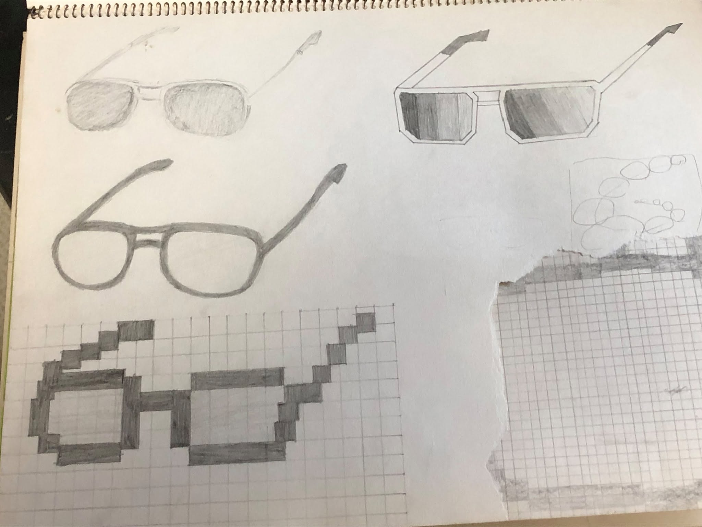

Calligraphy & Illustrations / 書道・イラスト・デザインの記録

書道「山河四望の春」
「二年五組 吉沢孝太郎」のサインが力強く躍る、堂々とした筆遣いの書道作品。

女神像の精密デッサン
髪の流れや顔立ちの気品、光の当たり具合を鉛筆のグラデーションで極めた名作。

熱闘のワンシーン（ボクシング）
リングの緊張感とファイターの闘志が伝わってくる、躍動感あふれるスケッチ。

アイウェア＆ピクセルデザイン
多様なフレームのスケッチからドット絵（Pixel Art）まで、時代を先取るデザインセンス。